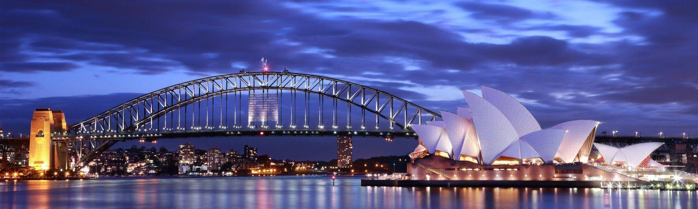
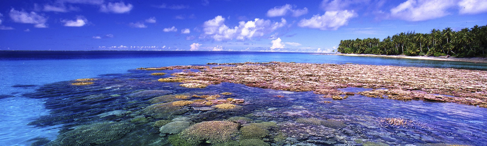

Oceania Overview
Oceania is a vast and diverse region comprising the islands of the Pacific Ocean, including Australia, New Zealand, and numerous island nations. This region is celebrated for its stunning natural beauty, from the vibrant coral reefs of the Great Barrier Reef to the rugged landscapes of New Zealand's South Island. Oceania offers a range of experiences, from serene beaches and lush rainforests to bustling cities and unique cultural traditions.
In Australia, you can explore world-famous landmarks such as the Sydney Opera House and the Great Barrier Reef. New Zealand boasts dramatic fjords and geothermal wonders, while the Pacific Islands offer paradise-like settings with their pristine beaches and rich indigenous cultures. Whether you're seeking adventure or relaxation, Oceania's varied environments provide something for every type of traveler.
Top Destinations in Oceania
Sydney, Australia
Sydney, Australia's largest city, is a vibrant metropolis known for its iconic landmarks and lively cultural scene. The Sydney Opera House, with its unique architectural design, is one of the most recognizable structures in the world. Visitors can also enjoy panoramic views from the Sydney Harbour Bridge or relax on the golden sands of Bondi Beach. The city's diverse neighborhoods offer a rich array of dining, shopping, and entertainment options, making Sydney a must-visit destination for travelers.
Great Barrier Reef, Australia
The Great Barrier Reef is an extraordinary natural wonder and the largest coral reef system on the planet. Stretching over 2,300 kilometers along the coast of Queensland, Australia, it offers unparalleled opportunities for snorkeling and diving among vibrant coral formations and diverse marine life. The reef is a UNESCO World Heritage site and is renowned for its ecological significance and breathtaking underwater scenery. Exploring the Great Barrier Reef provides a unique glimpse into one of the world's most beautiful and complex ecosystems.